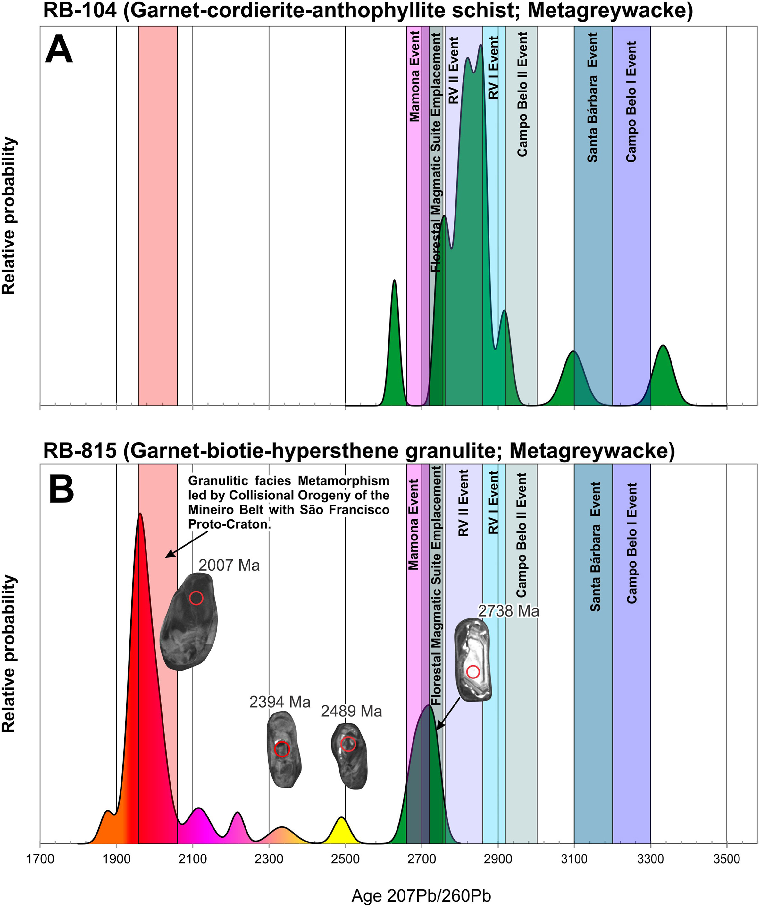

Geochronology and stratigraphy of the Boa Vista de Minas Group: An example of a Meso- to Neoarchean greenstone-belt in amphibolite-to granulite-facies

Resumo em Português
O Grupo Boa Vista de Minas é um conjunto de rochas metamórficas que varia de fácies anfibolito a granulito. Ocorre como bandas descontínuas, dobradas e em forma de quilha, em meio aos domos de metagranito-migmatito do Complexo Divinópolis. A definição de sua arquitetura litoestratigráfica e espessura é desafiadora devido ao intenso intemperismo e à sobreposição tectônica. A organização interna do complexo é caracterizada por três Formações principais. O nível basal, denominado Formação Nova Serrana, consiste principalmente em anfibolitos e granulitos máficos (metabasitos), rochas meta-ultramáficas, xistos a cummingtonita e xistos a cordierita-antofilita (metagrauváques vulcanogênicos imaturos). Análise U-Pb em zircão (LA-ICP-MS) de uma amostra de xisto a cordierita-antofilita da Formação Nova Serrana forneceu idade máxima de deposição de ~2,82 Ga.Formações ferríferas com ortopiroxênio e meta-cherts ferruginosos definem camadas intercaladas nas seções basais, denominadas coletivamente Formação Córrego do Cedro. Acima dessas unidades situa-se a Formação Igaratinga, composta por rochas calc-silicáticas intercaladas com lentes de anfibolitos e granulitos, gnaisses com sillimanita e rochas meta-ultramáficas, incluindo lentes comuns de granulito a biotita-ortopiroxênio (metagrauváques vulcanogênicos imaturos). Uma amostra de granulito a biotita-ortopiroxênio dessa Formação forneceu idade máxima de deposição de ~2,72 Ga (U-Pb, LA-ICP-MS). Adicionalmente, bordas de zircão com luminescência clara e zircão neoformado forneceram idade Concórdia de aproximadamente 2,0 Ga, interpretada como reflexo de sobreposição metamórfica de alto grau.Os padrões de enriquecimento em ETRL, depleções em Nb-Ta-Ti e razões Th/Nb variáveis observados nas rochas metabásicas de ambas as Formações são similares aos formados sob interações entre plumas enriquecidas em ETRL e arcos. As similaridades em litologia, litogeoquímica e idades de deposição das rochas do Grupo Boa Vista de Minas sugerem que este representa um equivalente de alto grau do Greenstone Belt de Pitangui, implicando que o evento tectono-termal metamórfico associado aos estágios finais da Orogenra Minas-Bahia se estendeu até o limite norte do Complexo Divinópolis, sendo mais abrangente do que anteriormente estimado.